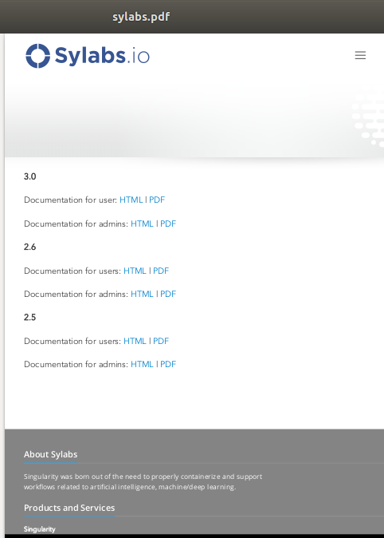

运行服务¶
有 许多方式 可以运行容器，使用 run, exec 和 shell 等命令运行容器，是一种交互式的运行方式，
Singularity也可以让用户以daemon方式运行容器,这样在后台运行服务。一个服务是在后台运用的一个进程，多个客户端能使用它，
比如一个web server或者一个database， 使用 instances 命令可以让容器以daemon方式运行。
概述¶
Singularity从2.4开始引入 instances 的概念，允许用户使用Singularity运行服务。 这篇文档主要使用NGINX web服务器作为例子讲述怎么使用 instances。 在文档最后的例子提供将URL转换为PDF的API。
如果没有容器，在Ubuntu的host上，你需要以如下方式启动一个NGINX服务。
$ sudo apt-get update && sudo apt-get install -y nginx
$ sudo service nginx start
如果你在容器内做如上的操作，你会发现服务也能启动。但是当你退出容器，这个服务的进程将继续在一个不可访问的namespace继续运行， 你kill不掉进程，也没法访问服务，这叫做孤儿进程。 Singularity instances将解决这个问题。
容器Instance¶
我们使用一个来自于 container library 的简单的容器 alpine_latest.sif 作为例子
$ singularity pull library://alpine
从Container Library下载``alpine_latest.sif``。
启动一个instance:
[command] [image] [name of instance]
$ singularity instance start alpine_latest.sif instance1
设个命令将为容器中的服务创建一个隔离的环境。 你可以使用 instance list 查看正在运行的instance。
$ singularity instance list
INSTANCE NAME PID IP IMAGE
instance1 22084 /home/dave/instances/alpine_latest.sif
Note
instances是和你的用户关联的，用户只能看到自己启动的instance，所以要么你在启动instance的时候如果用了 sudo
你在 list instance的时候也需要使用 sudo。
如果你想运行一个容器的多个instance，只需要简单的运行多次启动的命令，但是需要保证启动的instance具有不同的名字。
$ singularity instance start alpine_latest.sif instance2
$ singularity instance start alpine_latest.sif instance3
查看现在有哪些instance在运行:
$ singularity instance list
INSTANCE NAME PID IP IMAGE
instance1 22084 /home/dave/instances/alpine_latest.sif
instance2 22443 /home/dave/instances/alpine_latest.sif
instance3 22493 /home/dave/instances/alpine_latest.sif
list 命令也支持过滤显示运行的instance。
$ singularity instance list '*2'
INSTANCE NAME PID IP IMAGE
instance2 22443 /home/dave/instances/alpine_latest.s
instance启动后，你可以使用命令 singularity run/exec 在instance的容器中运行命令:
$ singularity run instance://instance1
$ singularity exec instance://instance2 cat /etc/os-release
当使用 run 命令的时候，instance中的 runscript 将会被执行。而 exec 在instance中执行给定的命令。
你也可以通过 singularity shell 命令进入instance:
$ singularity shell instance://instance3
Singularity>
你可以使用 instance stop 命令停止instance。
$ singularity instance stop instance1
如果你有多个instance，你想停止所有的instance，使用通配符或者添加–all标记。
$ singularity instance stop \*
$ singularity instance stop --all
$ singularity instance stop --a
Note
当使用通配符的时候，必须以反斜杠转移通配符，比如 \* 。
Nginx “Hello-world”¶
上面的例子讲述了可以是用instance让服务在后台运行。下面将讲述一个更实用NGINX web server的例子。 首先我们创建一个基本的 definition 文件 (假定文件名字为nginx.def):
Bootstrap: docker
From: nginx
Includecmd: no
%startscript
nginx
这个文件将使用Docker的NGINX容器作为基础，build容器的时候，会将其转换为singularity容器，启动instance的时候会运行startscript。
$ sudo singularity build nginx.sif nginx.def
$ sudo singularity instance start --writable-tmpfs nginx.sif web
Note
上面的 start 命令需要 sudo 权限，因为我们需要运行一个web server的例子。
并且由于nginx需要写文件，所以我们在启动instance的时候需要添加 --writable-tmpfs 标记。
下面我们确认下服务是否在运行:
$ curl localhost
<!DOCTYPE html>
<html>
<head>
<title>Welcome to nginx!</title>
<style>
body {
width: 35em;
margin: 0 auto;
font-family: Tahoma, Verdana, Arial, sans-serif;
}
</style>
</head>
<body>
<h1>Welcome to nginx!</h1>
<p>If you see this page, the nginx web server is successfully installed and
working. Further configuration is required.</p>
<p>For online documentation and support please refer to
<a href="http://nginx.org/">nginx.org</a>.<br/>
Commercial support is available at
<a href="http://nginx.com/">nginx.com</a>.</p>
<p><em>Thank you for using nginx.</em></p>
</body>
</html>
通过浏览器访问localhost，你也能看到同样的welcome页面!
一个完整的例子¶
这一段将展示将服务打包到容器，并运行服务的完整过程。 这个服务是一个API server，它提供的API可以将web页面转换成PDF, 这里 是它的源码， 你可以从基础容器build出一个容器，也可以从Container Library上下载已经做好的容器。
$ singularity pull url-to-pdf.sif library://sylabs/doc-examples/url-to-pdf:latest
Build容器¶
这里将使用definition文件(url-to-pdf.def)从基础容器开始build新容器。
url-to-pdf-api 是基于Node 8 server，所以我们的基础容器选择Docker容器 node:8:
Bootstrap: docker
From: node:8
Includecmd: no
除了Node 8, 我们还可以使用 post 安装其它的依赖软件，同时编译安装url-to-pdf-api:
%post
apt-get update && apt-get install -yq gconf-service libasound2 \
libatk1.0-0 libc6 libcairo2 libcups2 libdbus-1-3 libexpat1 \
libfontconfig1 libgcc1 libgconf-2-4 libgdk-pixbuf2.0-0 \
libglib2.0-0 libgtk-3-0 libnspr4 libpango-1.0-0 \
libpangocairo-1.0-0 libstdc++6 libx11-6 libx11-xcb1 libxcb1 \
libxcomposite1 libxcursor1 libxdamage1 libxext6 libxfixes3 libxi6 \
libxrandr2 libxrender1 libxss1 libxtst6 ca-certificates \
fonts-liberation libappindicator1 libnss3 lsb-release xdg-utils \
wget curl && rm -r /var/lib/apt/lists/*
git clone https://github.com/alvarcarto/url-to-pdf-api.git pdf_server
cd pdf_server
npm install
chmod -R 0755 .
接下来我们需要定义当启动instance的时候运行的脚本，这里我们在startscript中启动这个服务:
%startscript
cd /pdf_server
# Use nohup and /dev/null to completely detach server process from terminal
nohup npm start > /dev/null 2>&1 < /dev/null &
同时, url-to-pdf 服务还依赖一些环境变量，所以我们在environment中可以定义一些环境变量。
%environment
NODE_ENV=development
PORT=9000
ALLOW_HTTP=true
URL=localhost
export NODE_ENV PORT ALLOW_HTTP URL
完整的definition文件如下:
Bootstrap: docker
From: node:8
Includecmd: no
%post
apt-get update && apt-get install -yq gconf-service libasound2 \
libatk1.0-0 libc6 libcairo2 libcups2 libdbus-1-3 libexpat1 \
libfontconfig1 libgcc1 libgconf-2-4 libgdk-pixbuf2.0-0 \
libglib2.0-0 libgtk-3-0 libnspr4 libpango-1.0-0 \
libpangocairo-1.0-0 libstdc++6 libx11-6 libx11-xcb1 libxcb1 \
libxcomposite1 libxcursor1 libxdamage1 libxext6 libxfixes3 libxi6 \
libxrandr2 libxrender1 libxss1 libxtst6 ca-certificates \
fonts-liberation libappindicator1 libnss3 lsb-release xdg-utils \
wget curl && rm -r /var/lib/apt/lists/*
git clone https://github.com/alvarcarto/url-to-pdf-api.git pdf_server
cd pdf_server
npm install
chmod -R 0755 .
%startscript
cd /pdf_server
# Use nohup and /dev/null to completely detach server process from terminal
nohup npm start > /dev/null 2>&1 < /dev/null &
%environment
NODE_ENV=development
PORT=9000
ALLOW_HTTP=true
URL=localhost
export NODE_ENV PORT ALLOW_HTTP URL
然后我们可以build容器:
$ sudo singularity build url-to-pdf.sif url-to-pdf.def
运行服务¶
现在我们可以启动instance来运行服务了:
$ sudo singularity instance start url-to-pdf.sif pdf
Note
如果你碰到port冲突的错误，你可以修改definition文件中的 %environment 下的PORT。
然后我们可以使用curl来测试一下这个服务是否已经在运行。
$ curl -o sylabs.pdf localhost:9000/api/render?url=http://sylabs.io/docs
% Total % Received % Xferd Average Speed Time Time Time Current
Dload Upload Total Spent Left Speed
100 73750 100 73750 0 0 14583 0 0:00:05 0:00:05 --:--:-- 19130
你应该能看到生成了一个如下的PDF文件:
如果你shell进instance，你能看到正在运行的进程。
$ sudo singularity shell instance://pdf
Singularity: Invoking an interactive shell within container...
Singularity final.sif:/home/ysub> ps auxf
USER PID %CPU %MEM VSZ RSS TTY STAT START TIME COMMAND
root 461 0.0 0.0 18204 3188 pts/1 S 17:58 0:00 /bin/bash --norc
root 468 0.0 0.0 36640 2880 pts/1 R+ 17:59 0:00 \_ ps auxf
root 1 0.0 0.1 565392 12144 ? Sl 15:10 0:00 sinit
root 16 0.0 0.4 1113904 39492 ? Sl 15:10 0:00 npm
root 26 0.0 0.0 4296 752 ? S 15:10 0:00 \_ sh -c nodemon --watch ./src -e js src/index.js
root 27 0.0 0.5 1179476 40312 ? Sl 15:10 0:00 \_ node /pdf_server/node_modules/.bin/nodemon --watch ./src -e js src/index.js
root 39 0.0 0.7 936444 61220 ? Sl 15:10 0:02 \_ /usr/local/bin/node src/index.js
Singularity final.sif:/home/ysub> exit
改进上面的例子¶
上面的例子已经能正常工作，但是每次都需要通过 curl 访问，需要记住url的格式。
这里我们将使用Scientific Filesystem (SCIF)的app来简化生成PDF的过程。
首先，我们将安装url-to-pdf移到app中:
%appinstall pdf_server
git clone https://github.com/alvarcarto/url-to-pdf-api.git pdf_server
cd pdf_server
npm install
chmod -R 0755 .
然后需要更新 startscript 指定app的位置:
%startscript
cd /scif/apps/pdf_server/scif/pdf_server
# Use nohup and /dev/null to completely detach server process from terminal
nohup npm start > /dev/null 2>&1 < /dev/null &
接着我们定义一个叫做pdf_client的app, 这个app负责发送请求到server。
%apprun pdf_client
if [ -z "${1:-}" ]; then
echo "Usage: singularity run --app pdf <instance://name> <URL> [output file]"
exit 1
fi
curl -o "${SINGULARITY_APPDATA}/output/${2:-output.pdf}" "${URL}:${PORT}/api/render?url=${1}"
pdf_client 会要求至少要传递一个参数。
整个definition文件如下:
Bootstrap: docker
From: node:8
Includecmd: no
%post
apt-get update && apt-get install -yq gconf-service libasound2 \
libatk1.0-0 libc6 libcairo2 libcups2 libdbus-1-3 libexpat1 \
libfontconfig1 libgcc1 libgconf-2-4 libgdk-pixbuf2.0-0 \
libglib2.0-0 libgtk-3-0 libnspr4 libpango-1.0-0 \
libpangocairo-1.0-0 libstdc++6 libx11-6 libx11-xcb1 libxcb1 \
libxcomposite1 libxcursor1 libxdamage1 libxext6 libxfixes3 libxi6 \
libxrandr2 libxrender1 libxss1 libxtst6 ca-certificates \
fonts-liberation libappindicator1 libnss3 lsb-release xdg-utils \
wget curl && rm -r /var/lib/apt/lists/*
%appinstall pdf_server
git clone https://github.com/alvarcarto/url-to-pdf-api.git pdf_server
cd pdf_server
npm install
chmod -R 0755 .
%startscript
cd /scif/apps/pdf_server/scif/pdf_server
# Use nohup and /dev/null to completely detach server process from terminal
nohup npm start > /dev/null 2>&1 < /dev/null &
%environment
NODE_ENV=development
PORT=9000
ALLOW_HTTP=true
URL=localhost
export NODE_ENV PORT ALLOW_HTTP URL
%apprun pdf_client
if [ -z "${1:-}" ]; then
echo "Usage: singularity run --app pdf <instance://name> <URL> [output file]"
exit 1
fi
curl -o "${SINGULARITY_APPDATA}/output/${2:-output.pdf}" "${URL}:${PORT}/api/render?url=${1}"
由于我们以前已经创建了容器，这里使用 --force 标记覆盖原来的容器。
$ sudo singularity build --force url-to-pdf.sif url-to-pdf.def
容器中有一个生成PDF文件的存储路径，我们需要host上的一个路径和这个路径做映射，比如将host上的 /tmp/out 映射到容器中的路径。
$ mkdir /tmp/out
启动instance:
$ singularity instance start --bind /tmp/out/:/output url-to-pdf.sif pdf
请求生成一个sylabs.pdf文件:
$ singularity run --app pdf_client instance://pdf http://sylabs.io/docs sylabs.pdf
确认是否生成:
$ ls /tmp/out/
sylabs.pdf
当我们不需要的时候，可以stop掉instance.
$ singularity instance stop --all
Note
如果你想将容器内的文件在host上使用，你需要使用 --bind 选项将host上的目录和容器中的目录做映射。
当你启动一个叫web的instance的时候，如果你需要将instance中 /output/ 映射到host上，如下方式运行：
$ singularity instance start --bind output/dir/outside/:/output/ nginx.sif web
System integration / PID files¶
如果你在容器中运行服务，并且希望当host启动能自动的启动服务， 当关机的时候能自动的关闭这些服务。这个可以通过init或者supervisor来控制。许多init和supervisor通过pid文件控制进程。 daemons support managing processes via pid files.
当你启动instance的时候通过 –pid-file 选项可以指定pid文件的位置：
$ singularity instance start --pid-file /home/dave/alpine.pid alpine_latest.sif instanceA
$ cat /home/dave/alpine.pid
23727
下面是host上的一个service的配置文件的例子。
[Unit]
Description=Web Instance
After=network.target
[Service]
Type=forking
Restart=always
User=www-data
Group=www-data
PIDFile=/run/web-instance.pid
ExecStart=/usr/local/bin/singularity instance start --pid-file /run/web-instance.pid /data/containers/web.sif web-instance
ExecStop=/usr/local/bin/singularity instance stop web-instance
[Install]
WantedBy=multi-user.target
注意由于 instance start 启动一个instance，然后直接结束，因此 Type 必须是 forking。